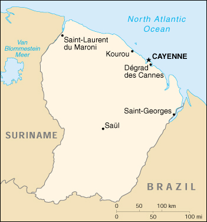

![[Country Flag of French Guiana]](../flags/fg-lgflag.jpg)
| French Guiana |
|
         |  | |
| Introduction |
Background: First settled by the French in 1604, French Guiana was the site of notorious penal settlements until 1951. The European Space Agency launches its communication satellites from Kourou.
| Geography |
Location: Northern South America, bordering the North Atlantic Ocean, between Brazil and Suriname
Geographic coordinates: 4 00 N, 53 00 W
Map references: South America
Area:
total:
91,000 sq km
land:
89,150 sq km
water:
1,850 sq km
Area - comparative: slightly smaller than Indiana
Land boundaries:
total:
1,183 km
border countries:
Brazil 673 km, Suriname 510 km
Coastline: 378 km
Maritime claims:
exclusive economic zone:
200 nm
territorial sea:
12 nm
Climate: tropical; hot, humid; little seasonal temperature variation
Terrain: low-lying coastal plains rising to hills and small mountains
Elevation extremes:
lowest point:
Atlantic Ocean 0 m
highest point:
Bellevue de l'Inini 851 m
Natural resources: bauxite, timber, gold (widely scattered), cinnabar, kaolin, fish
Land use:
arable land:
0%
permanent crops:
0%
permanent pastures:
0%
forests and woodland:
90%
other:
10% (1996 est.)
Irrigated land: 20 sq km (1993 est.)
Natural hazards: high frequency of heavy showers and severe thunderstorms; flooding
Environment - current issues: NA
Geography - note: mostly an unsettled wilderness
| People |
Population: 172,605 (July 2000 est.)
Age structure:
0-14 years:
31% (male 27,116; female 25,902)
15-64 years:
64% (male 59,690; female 50,621)
65 years and over:
5% (male 4,694; female 4,582) (2000 est.)
Population growth rate: 2.93% (2000 est.)
Birth rate: 22.44 births/1,000 population (2000 est.)
Death rate: 4.76 deaths/1,000 population (2000 est.)
Net migration rate: 11.59 migrant(s)/1,000 population (2000 est.)
Sex ratio:
at birth:
1.05 male(s)/female
under 15 years:
1.05 male(s)/female
15-64 years:
1.18 male(s)/female
65 years and over:
1.02 male(s)/female
total population:
1.13 male(s)/female (2000 est.)
Infant mortality rate: 13.99 deaths/1,000 live births (2000 est.)
Life expectancy at birth:
total population:
76.1 years
male:
72.77 years
female:
79.6 years (2000 est.)
Total fertility rate: 3.21 children born/woman (2000 est.)
Nationality:
noun:
French Guianese (singular and plural)
adjective:
French Guianese
Ethnic groups: black or mulatto 66%, white 12%, East Indian, Chinese, Amerindian 12%, other 10%
Religions: Roman Catholic
Languages: French
Literacy:
definition:
age 15 and over can read and write
total population:
83%
male:
84%
female:
82% (1982 est.)
| Government |
Country name:
conventional long form:
Department of Guiana
conventional short form:
French Guiana
local long form:
none
local short form:
Guyane
Data code: FG
Dependency status: overseas department of France
Government type: NA
Capital: Cayenne
Administrative divisions: none (overseas department of France)
Independence: none (overseas department of France)
National holiday: National Day, Taking of the Bastille, 14 July (1789)
Constitution: 28 September 1958 (French Constitution)
Legal system: French legal system
Suffrage: 18 years of age; universal
Executive branch:
chief of state:
President Jacques CHIRAC of France (since 17 May 1995), represented by Prefect Dominique VIAN (since NA January 1997)
head of government:
President of the General Council Andre LECANTE (since NA March 1998); President of the Regional Council Antoine KARAM (since 22 March 1992)
cabinet:
NA
elections:
French president elected by popular vote for a seven-year term; prefect appointed by the French president on the advice of the French Ministry of Interior; presidents of the General and Regional Councils are appointed by the members of those councils
Legislative branch:
unicameral General Council or Conseil General (19 seats; members are elected by popular vote to serve six-year terms) and a unicameral Regional Council or Conseil Regional (31 seats; members are elected by popular vote to serve six-year terms)
elections:
General Council - last held 20-27 March 1994 (next to be held NA 2000); Regional Council - last held 15 March 1998 (next to be held NA 2004)
election results:
General Council - percent of vote by party - NA; seats by party - PSG 8, FDG 4, RPR 1, other left 2, other right 2, other 2; Regional Council - percent of vote by party - PS 28.28%, various left parties 22.56%, RPR 15.91%, independents 8.6%, Walwari Committee 6%; seats by party - PS 11, various left parties 9, RPR 6, independents 3, Walwari Committee 2
note:
one seat was elected to the French Senate on 27 September 1998 (next to be held NA September 2007); results - percent of vote by party - NA; seats by party - NA; 2 seats were elected to the French National Assembly on 25 May - 1 June 1997 (next to be held NA 2002); results - percent of vote by party - NA; seats by party - RPR 1, PSG 1
Judicial branch: Court of Appeals or Cour d'Appel (highest local court based in Martinique with jurisdiction over Martinique, Guadeloupe, and French Guiana)
Political parties and leaders: Action Democrate Guiana or ADG [Andre LECANTE]; Democratic and European Rally of the Senate or RDSE [leader NA]; Guianese Socialist Party or PSG [Marie-Claude VERDAN]; Guyana Democratic Forces or FDG [Georges OTHILY]; Nationalist Popular Party of Guyana (Parti Nationaliste Populaire Guiana) or PNPG [Jose DORCY]; Rally for the Republic or RPR [Roland HO-WEN-SZE]; Socialist Party or PS [Pierre RIBARDIERE] (may be a subset of PSG); Union for French Democracy or UDF [R. CHOW-CHINE]; Union of Social Democrats (Union des Socialistes Democates) or USD [Theodore ROUMILLAC] (umbrella group of RPR and UDF); Walwari Committee [Christine TAUBIRA-DELANON]
International organization participation: FZ, WCL, WFTU
Diplomatic representation in the US: none (overseas department of France)
Diplomatic representation from the US: none (overseas department of France)
Flag description: the flag of France is used
| Economy |
Economy - overview: The economy is tied closely to that of France through subsidies and imports. Besides the French space center at Kourou, fishing and forestry are the most important economic activities. The large reserves of tropical hardwoods, not fully exploited, support an expanding sawmill industry which provides sawn logs for export. Cultivation of crops is limited to the coastal area, where the population is largely concentrated; rice and manioc are the major crops. French Guiana is heavily dependent on imports of food and energy. Unemployment is a serious problem, particularly among younger workers.
GDP: purchasing power parity - $1 billion (1998 est.)
GDP - real growth rate: NA%
GDP - per capita: purchasing power parity - $6,000 (1998 est.)
GDP - composition by sector:
agriculture:
NA%
industry:
NA%
services:
NA%
Population below poverty line: NA%
Household income or consumption by percentage share:
lowest 10%:
NA%
highest 10%:
NA%
Inflation rate (consumer prices): 2.5% (1992)
Labor force: 58,800 (1997)
Labor force - by occupation: services, government, and commerce 60.6%, industry 21.2%, agriculture 18.2% (1980)
Unemployment rate: 21.4% (1998 est.)
Budget:
revenues:
$225 million
expenditures:
$390 million, including capital expenditures of $105 million (1996)
Industries: construction, shrimp processing, forestry products, rum, gold mining
Industrial production growth rate: NA%
Electricity - production: 430 million kWh (1998)
Electricity - production by source:
fossil fuel:
100%
hydro:
0%
nuclear:
0%
other:
0% (1998)
Electricity - consumption: 400 million kWh (1998)
Electricity - exports: 0 kWh (1998)
Electricity - imports: 0 kWh (1998)
Agriculture - products: rice, manioc (tapioca), sugar, cocoa, vegetables, bananas; cattle, pigs, poultry
Exports: $155 million (f.o.b., 1997)
Exports - commodities: shrimp, timber, gold, rum, rosewood essence, clothing
Exports - partners: France 62%, Switzerland 7%, US 2% (1997)
Imports: $625 million (c.i.f., 1997)
Imports - commodities: food (grains, processed meat), machinery and transport equipment, fuels and chemicals
Imports - partners: France 52%, US 14%, Trinidad and Tobago 6% (1997)
Debt - external: $1.2 billion (1988)
Economic aid - recipient: $NA
Currency: 1 French franc (F) = 100 centimes
Exchange rates: euros per US$1 - 0.9867 (January 2000), 0.9386 (1999); French francs (F) per US$1 - 5.65 (January 1999), 5.8995 (1998), 5.8367 (1997), 5.1155 (1996), 4.9915 (1995)
Fiscal year: calendar year
| Communications |
Telephones - main lines in use: 47,000 (1995)
Telephones - mobile cellular: NA
Telephone system:
domestic:
fair open wire and microwave radio relay system
international:
satellite earth station - 1 Intelsat (Atlantic Ocean)
Radio broadcast stations: AM 2, FM 14 (including 6 repeaters), shortwave 6 (including 5 repeaters) (1998)
Radios: 104,000 (1997)
Television broadcast stations: 3 (plus eight low-power repeaters) (1997)
Televisions: 30,000 (1997)
Internet Service Providers (ISPs): NA
| Transportation |
Railways: 0 km (1995)
Highways:
total:
1,817 km
paved:
727 km
unpaved:
1,090 km (1995 est.)
Waterways: 460 km, navigable by small oceangoing vessels and river and coastal steamers; 3,300 km navigable by native craft
Ports and harbors: Cayenne, Degrad des Cannes, Saint-Laurent du Maroni
Merchant marine: none (1999 est.)
Airports: 11 (1999 est.)
Airports - with paved runways:
total:
4
over 3,047 m:
1
914 to 1,523 m:
2
under 914 m:
1 (1999 est.)
Airports - with unpaved runways:
total:
7
914 to 1,523 m:
2
under 914 m:
5 (1999 est.)
| Military |
Military branches: French Forces, Gendarmerie
Military manpower - availability:
males age 15-49:
48,445 (2000 est.)
Military manpower - fit for military service:
males age 15-49:
31,367 (2000 est.)
Military expenditures - dollar figure: $NA
Military expenditures - percent of GDP: NA%
Military - note: defense is the responsibility of France
| Transnational Issues |
Disputes - international: Suriname claims area between Riviere Litani and Riviere Marouini (both headwaters of the Lawa)
Illicit drugs: small amount of marijuana grown for local consumption; minor transshipment point to Europe